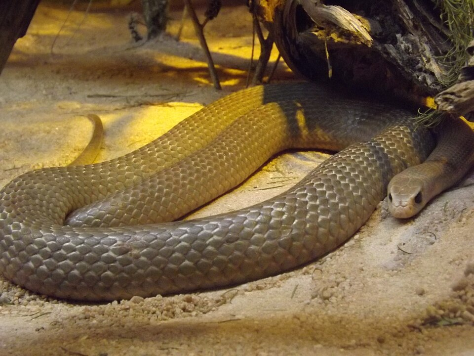
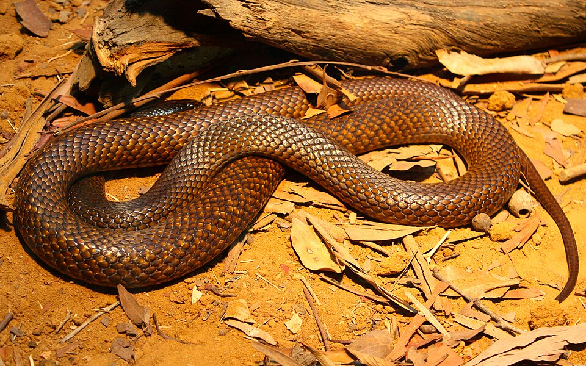
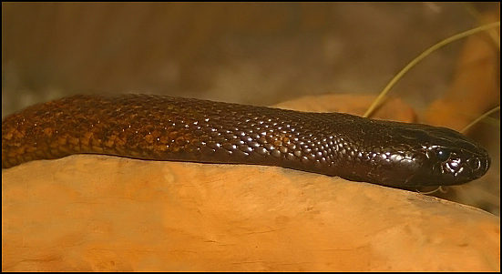
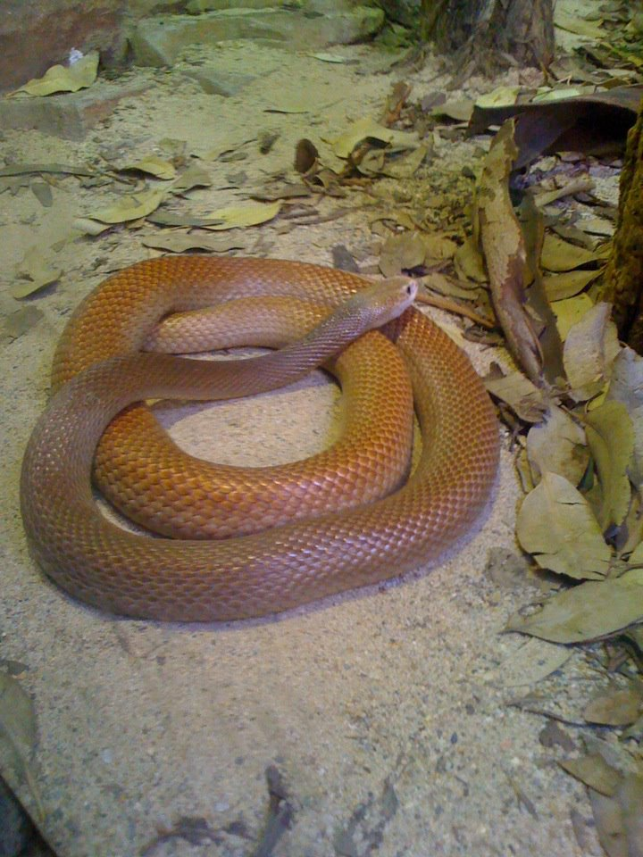
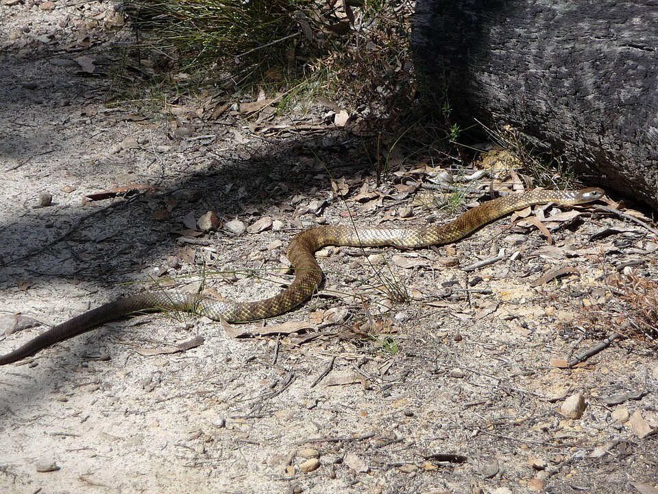
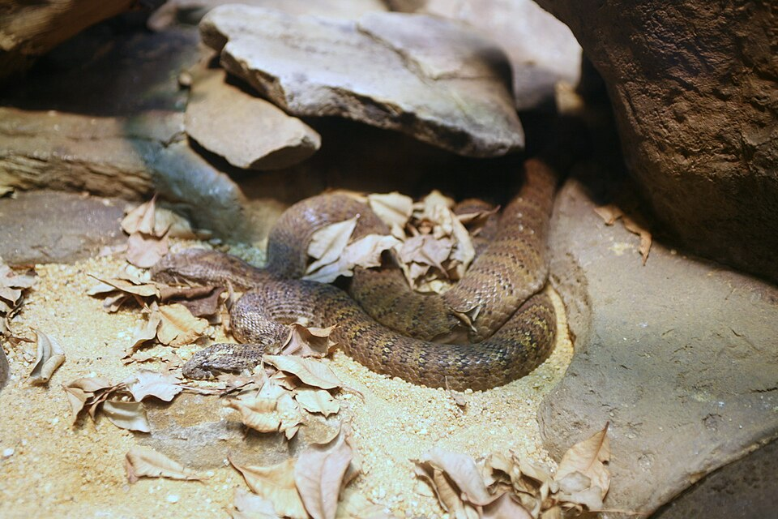
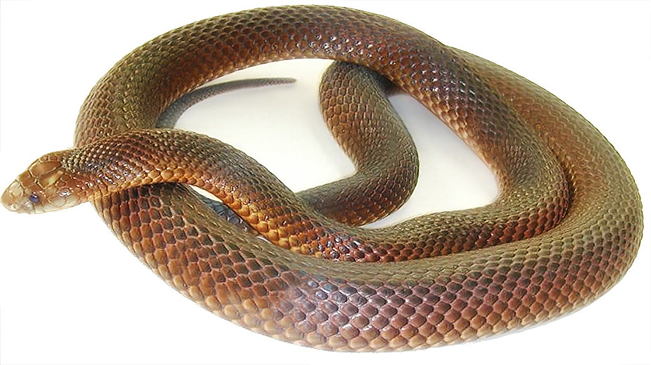
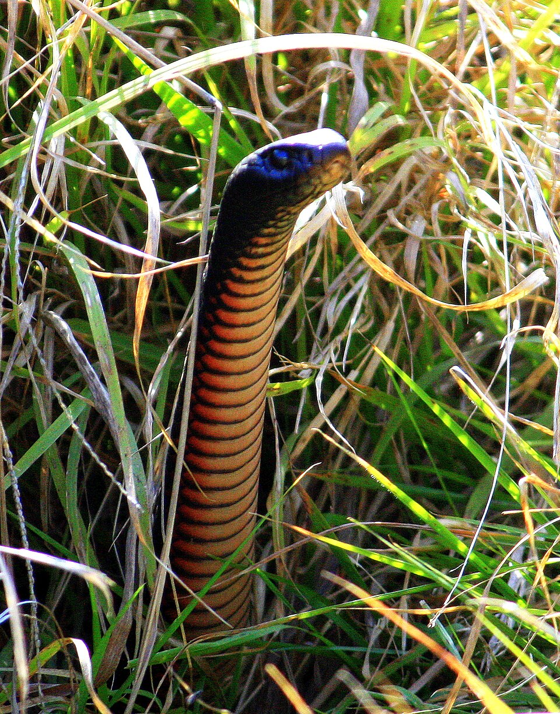
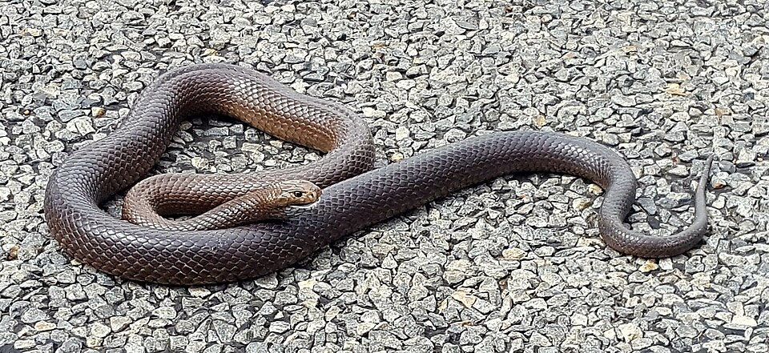
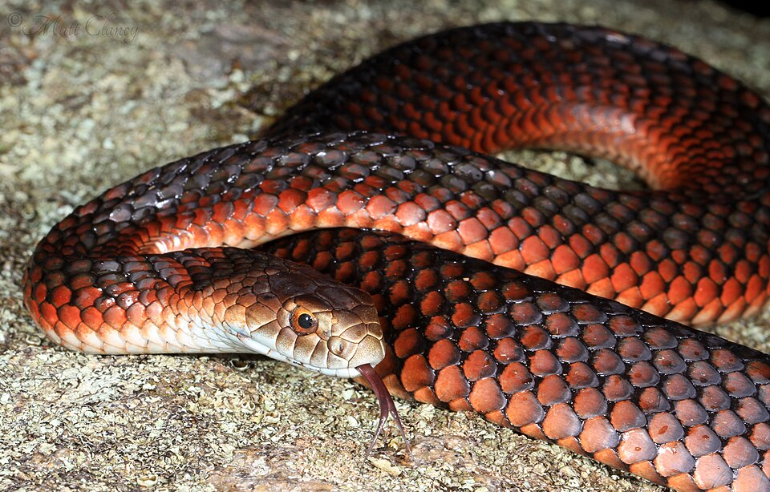

📑 Contents
- 1. Australian Venomous Snakes — Quick ID with Photos
- 2. What to Do — Pressure Immobilisation Bandage (PIB)
- 3. What NOT to Do
- 4. Snake Bite Symptoms Timeline
- 5. First Aid Kit — Snake Bite Specific
- 6. When the Victim Collapses
- 7. Hospital Treatment (What to Expect)
- 8. Dry Bites (No Envenomation)
- 9. Regional Snake Risk by Season
- 10. Snake Bite Prevention — Practical Outback Advice
- 11. Other Australian Venomous Bites — Quick Comparison
- Related Pages
Australian Snake Bite — Definitive Reference
Australia has 20 of the world's 25 most venomous snake species. Snake bite is the remote emergency where correct first aid has the biggest impact on survival — and incorrect first aid can kill. This is the most detailed snake bite reference in this wiki.
For the rapid-action version, see Outback First Aid — Snake Bite.
1. Australian Venomous Snakes — Quick ID with Photos
| Snake | Photo | Distribution | Venom Type | Time to Symptoms | Deadliness |
|---|---|---|---|---|---|
| Eastern Brown |  |
Eastern/central Australia | Neurotoxic + coagulopathic | 15–30 min | Very high |
| Western Brown (Gwardar) |  |
WA, SA, NT | Neurotoxic + coagulopathic | 15–30 min | Very high |
| Inland Taipan (Fierce Snake) |  |
Channel Country QLD/SA | Neurotoxic (most potent venom) | 30–60 min | Extremely high |
| Coastal Taipan |  |
Coastal QLD, NT top end | Neurotoxic + coagulopathic | 15–30 min | Very high |
| Tiger Snake |  |
Southern Australia, TAS | Neurotoxic + myotoxic | 30–60 min | High |
| Death Adder |  |
All mainland states | Neurotoxic (paralysis) | 1–6 hours | High |
| Mulga (King Brown) |  |
All mainland except far south | Myotoxic + anticoagulant | Hours | Moderate |
| Red-bellied Black |  |
Eastern Australia | Myotoxic + anticoagulant | Hours | Low (rarely fatal) |
| Dugite |  |
WA | Neurotoxic + coagulopathic | 30–60 min | Moderate |
| Copperhead |  |
Cooler southern regions | Neurotoxic | Hours | Low-moderate |
All photos: Wikimedia Commons (CC BY-SA). Eastern Brown (Pseudonaja textilis), Western Brown (P. nuchalis), Inland Taipan (Oxyuranus microlepidotus), Coastal Taipan (O. scutellatus), Tiger Snake (Notechis scutatus), Death Adder (Acanthophis antarcticus), Mulga (Pseudechis australis), Red-bellied Black (P. porphyriacus), Dugite (P. affinis), Copperhead (Austrelaps superbus).
Snake ID Quick Guide
Brown snakes — slender, uniform brown to orange, head not distinctly wider than neck. Fast-moving. Most common cause of snake bite deaths in Australia.
Taipans — large, slender, tan to dark brown with pale head. Inland taipan can change colour seasonally. Coiled striking posture with raised forebody.
Tiger snakes — thick-bodied, banded pattern (not always present — some are plain), broad head. Found near water in southern areas.
Death Adders — short, thick, triangular head, banded pattern, tail tip looks like a worm (used as lure). Ambush hunters — do not flee.
Mulga (King Brown) — large, thick, orange-brown to dark brown. Narrow head compared to body. Very large venom glands give the head a distinctive shape.
Red-bellied Black — glossy black with red-orange belly. Found near water in eastern Australia. Flattens body when threatened.
2. What to Do — Pressure Immobilisation Bandage (PIB)
This is the only proven method for slowing venom spread. Do not deviate from this sequence.
Step-by-Step
-
Keep the victim calm and completely still. Movement pumps venom through the lymphatic system. Do not let them walk. Do not let them move the bitten limb. This is the single most important non-technical intervention.
-
DO NOT wash the wound. Venom remaining on the skin allows hospital staff to identify the species using a Venom Detection Kit (VDK). Washing it away removes this diagnostic evidence.
-
DO NOT cut, suck, or tourniquet. These outdated methods cause tissue damage and do not help. Tourniquets can cause limb loss. Cutting the wound introduces infection. Sucking does not remove venom (it is immediately absorbed).
-
Apply a firm bandage starting OVER the bite site, wrapping UP the limb. Start by covering the bite point, then bandage distally to proximally (fingers to armpit, or toes to groin). Important: cover the entire limb.
- Tightness: as firm as for a sprained ankle — tight enough to compress lymphatic vessels but not tight enough to cut off circulation.
- Check: fingers/toes should remain pink with normal capillary refill (pressure on fingernail/toenail causes it to blanch, colour returns within 2 seconds).
- Best bandage: Setopress or Smart Bandage (elastic, 10 cm wide, rectangular indicators that stretch to squares at correct tension). Alternative: heavy crepe bandage 15 cm wide.
-
Two bandages needed for a full limb (fingers to armpit or toes to groin).
-
Splint the limb to prevent movement. Any rigid material: SAM splint, branch wrapped in cloth, rolled magazine, tent pole, axe handle. Bind the splint to the bandaged limb. The goal is to prevent joint movement.
-
Mark the bite site on the bandage with a pen. Circle the bite site on the outer bandage. This tells hospital staff where to focus without removing the bandage (removing it releases a venom bolus).
-
Keep the bandage on until at hospital. Removing the bandage before antivenom is available releases a large amount of venom into the bloodstream — this can cause sudden collapse. The bandage stays on even during evacuation.
-
If bitten on torso or head: Apply firm direct pressure over the bite with a large pad and hold in place with a firm bandage. Do not restrict breathing. PIB cannot be applied to the torso — firm pressure is the only option.
Two-Person PIB Application
If two people are available: - Person 1: Talks to the victim, keeps them calm, marks the bite site - Person 2: Applies the bandage and splint
This is faster and less stressful than a single person trying to manage everything.
3. What NOT to Do
| Action | Why It Is Dangerous |
|---|---|
| Wash the bite site | Removes venom needed for VDK identification |
| Cut the wound | Introduces infection, damages tissue, does not remove venom |
| Suck venom (mouth or device) | Does not work — venom is immediately absorbed. Suction devices cause tissue damage |
| Apply tourniquet | Kills the limb. Causes compartment syndrome, nerve damage, limb loss |
| Give alcohol, caffeine, or food | Alcohol worsens coagulopathy. Alcohol/caffeine increase blood flow, spreading venom faster |
| Let victim walk | Movement pumps venom through lymphatics. Carry them if possible |
| Try to catch or kill the snake | Wastes time. Risks a second bite. Venom reserves do not deplete — second bite can be worse |
| Apply electric shock | Widely debunked myth. Causes burns and arrhythmia. Does not denature venom |
| Remove the bandage during transport | Releases a venom bolus into circulation — can cause immediate collapse |
4. Snake Bite Symptoms Timeline
| Time Post-Bite | What to Watch |
|---|---|
| 0–15 min | Fang marks (may not be obvious, especially from small snakes), local pain, anxiety. Fang marks may look like two small punctures — or a single scratch if the snake glances. |
| 15–30 min | Brown snakes: headache, nausea, vomiting, abdominal pain, sudden collapse possible. This is the brown snake window — collapse can occur within 30 minutes of a significant envenomation. |
| 30–60 min | Taipans and tiger snakes: ptosis (drooping eyelids — a classic sign), difficulty speaking or swallowing, limb weakness. |
| 1–3 hours | Descending paralysis — starts in the face (eyelids, facial muscles) and moves down. Breathing difficulty. Coagulopathy — bleeding gums, dark urine (myoglobinuria), easy bruising. |
| 3–6 hours | Death Adders: progressive paralysis reaches respiratory muscles. Respiratory failure possible. |
| 6–24 hours | Myotoxins causing muscle pain and dark urine (myoglobinuria). Kidney failure risk from myoglobin breakdown products. Antivenom at this stage still useful but damage may already be occurring. |
Collapse Timeline — Brown Snake
Brown snake bites can progress from asymptomatic to cardiac arrest in under 30 minutes. The common pattern:
- Bite → 10–15 min asymptomatic → headache/nausea → collapse → cardiac arrest
- This is why every brown snake bite is a PLB activation until proven otherwise
- If you are in brown snake country and someone is bitten, you do not wait for symptoms
5. First Aid Kit — Snake Bite Specific
Every outbound vehicle should have these items specifically for snake bite response, separate from the general first aid kit:
| Item | Purpose | Quantity |
|---|---|---|
| Setopress or Smart Bandage (10 cm elastic, indicator rectangles) | PIB application — rectangles stretch to squares at correct tension | 2 |
| OR heavy crepe bandages (15 cm wide) | PIB application if elastic bandage not available | 2 |
| SAM splint or rigid splint material | Immobilising the limb after bandaging | 1–2 |
| Permanent marker | Marking bite site on bandage | 1 |
| Resuscitation mask | CPR if collapse/cardiac arrest occurs | 1 |
| Small card with emergency numbers laminated | RFDS, local medical clinic, PLB activation instructions | 1 |
Bandage Storage Note
Store elastic bandages out of direct sun and heat. UV degrades elastic fibres. A bandage stored in the glovebox for five summers may have lost elasticity and will not achieve correct PIB pressure.
6. When the Victim Collapses
If the victim loses consciousness:
- Check airway and breathing immediately. Look, listen, feel for breathing for no more than 10 seconds.
- If NOT breathing: Start CPR immediately (30 compressions to 2 breaths). Do not wait. Do not delay to find a phone. Brown snake and taipan venom can cause cardiac arrest from direct cardiotoxicity. Survival depends on maintaining cerebral oxygenation until antivenom is available.
- Continue CPR until medical help arrives or the victim regains consciousness. Cases of prolonged CPR (30+ minutes) with full recovery are documented in Australian snake bite medicine. Do not stop.
- If breathing but unconscious: Place in recovery position. Monitor airway continuously. Be prepared for vomiting.
- Presume identification will happen at hospital. Do not risk another bite trying to capture or kill the snake. A description of the snake from memory will help, but with modern polyvalent antivenom, species identification is less critical than it once was.
When to Stop CPR
- Professional help arrives and takes over
- Victim shows signs of life (breathing, movement)
- You are physically exhausted and cannot continue
- Unsafe environment forces evacuation (rare — prioritise your own safety)
Do not stop because "it has been too long." Prolonged CPR has saved Australian snake bite patients.
7. Hospital Treatment (What to Expect)
Understanding what happens at hospital helps you make better decisions about transport and timing.
| Step | Description |
|---|---|
| Venom Detection Kit (VDK) | Swab of bite site, blood sample, urine sample. Identifies snake type by venom antigens. Results in 15–25 minutes. |
| Blood tests | Coagulation profile (INR, APTT, fibrinogen), full blood count, electrolytes, creatine kinase (CK) for muscle damage. |
| Antivenom administration | Given IV. One vial usually sufficient, but repeat doses may be needed. |
| Monovalent antivenom | Species-specific. Tiger snake antivenom covers tiger snake, copperhead, rough-scaled snake, and some others. |
| Polyvalent antivenom | Covers all major Australian snake species. Used when species cannot be confidently identified or severe envenomation requires immediate treatment. |
| Adrenaline prepared | 1 in 4 patients have an allergic reaction (anaphylaxis) to antivenom. Adrenaline is ready at the bedside. |
| Cost | Antivenom $1,000–$5,000 per vial. Not relevant to patient — Medicare/public hospital covers it. |
Antivenom Coverage
| Antivenom Type | Effective Against |
|---|---|
| Brown Snake | Eastern brown, western brown, dugite, gwardar |
| Tiger Snake | Tiger snake, copperhead, rough-scaled snake |
| Taipan | Coastal taipan, inland taipan |
| Death Adder | All death adder species (common, northern, desert) |
| Black Snake | Red-bellied black, mulga (partial — mulga may need high doses) |
| Polyvalent | All of the above |
Outcomes
- Untreated systemic envenomation from brown snake: ~10–20% fatality rate
- With correct PIB + antivenom: < 1% fatality rate
- Most snake bite deaths in Australia are from brown snakes — cause: delayed treatment, underestimating severity, failure to apply or maintain PIB
8. Dry Bites (No Envenomation)
Not every bite injects venom. Australian snakes deliver "dry bites" in approximately 30–50% of defensive strikes. Snakes conserve venom for prey and may inject minimal or no venom when biting a threat.
Signs of a Dry Bite
- Fang marks present but no symptoms develop over 6 hours
- No coagulopathy on blood tests (requires hospital lab — not assessable in the field)
- Normal neurological exam
Field Rule for Dry Bites
Treat every bite as an envenomation until proven otherwise by hospital testing. A dry bite cannot be confirmed in the field. Apply full PIB and evacuate. Do not make assumptions about whether the snake "probably" injected venom.
9. Regional Snake Risk by Season
| Region | High Risk Season | Primary Snakes |
|---|---|---|
| Simpson Desert | September–April | Western Brown, Mulga, Death Adder |
| Cape York | Year-round (tropical — no true winter) | Coastal Taipan, Eastern Brown, Death Adder |
| Kimberley / Canning Stock Route | May–October (dry season — peak travel season) | Mulga, Western Brown, Death Adder |
| Central Australia (Ayers Rock, Alice Springs, Finke) | September–March | Western Brown, Mulga |
| Southern outback (Flinders Ranges, Gawler Ranges, Nullarbor) | October–March | Tiger Snake, Eastern Brown |
| Top End (Darwin, Kakadu, Litchfield) | Year-round | Coastal Taipan, Death Adder, Mulga |
| Channel Country (Inland Taipan habitat) | October–April | Inland Taipan (rarely encountered — shy), Eastern Brown |
| Northern Flinders / Oodnadatta Track | September–April | Western Brown, Mulga, Death Adder |
Seasonal Behaviour
- Summer heat (40°C+): Snakes are crepuscular (active dawn/dusk) or nocturnal. Daytime they shelter under rocks, in burrows, or in spinifex clumps. You are more likely to encounter one in the early morning or evening.
- Winter: Activity drops significantly in southern outback. Snakes hibernate or are inactive below 15°C. In tropical areas (Cape York, Top End), activity is year-round.
- Breeding season (spring, September–November): Males are more active and may be encountered more frequently.
- Flood events: Snakes move to higher ground. After flooding in arid areas, snake activity concentrates around remaining water sources and high ground.
10. Snake Bite Prevention — Practical Outback Advice
| Situation | Prevention |
|---|---|
| Walking | Wear closed boots (not sandals or thongs), long pants. Step on top of logs, not over them. Stomp feet — snakes feel vibration and move away. |
| Camping | Clear camp site of debris, spinifex, and long grass. Keep tent zipped. Shake out boots, bedding, and clothes before use (snakes seek warm, enclosed spaces at night). |
| Gathering firewood | Look under branches before grabbing. Snakes shelter under fallen timber. |
| Night-time | Use a torch. Snakes are active at night in warm weather. Do not walk barefoot. |
| Vehicle | Check under the vehicle and around tyres before approaching after dark. Snakes warm up on bitumen at dawn/dusk. |
| Swags | Zip your swag completely. Snakes have been found inside swags that were left open. |
11. Other Australian Venomous Bites — Quick Comparison
Not a snake, but worth knowing the difference:
| Creature | First Aid | Notes |
|---|---|---|
| Funnel-web spider | PIB technique (same as snake bite) | One of the few non-snake uses of PIB. Found in NSW/QLD. Highly venomous but antivenom is very effective. |
| Redback spider | Ice pack, no PIB | Bite may cause latrodectism (severe pain, sweating, nausea). Antivenom at hospital. PIB not indicated. |
| Blue-ringed octopus | Immediate CPR | Venom (tetrodotoxin) causes paralysis within minutes. No antivenom. Recovery possible with prolonged CPR. Found in rock pools. |
| Stonefish | HOT water immersion (45°C+) | Venom denatures at high temperature. Immerse affected area for 30–90 min. |
| Box jellyfish | Vinegar to tentacles (stops undischarged nematocysts). DO NOT rub. DO NOT use fresh water. | Found in tropical northern waters November–May. Antivenom available. Irukandji syndrome may develop later (severe back pain, hypertension). |
Related Pages
- Outback First Aid — Rapid-action version of snake bite PIB, general remote first aid
- Extreme Heat Survival — Heat illness progression, not to be confused with snake envenomation symptoms
- Emergency Services — PLB/EPIRB activation, RFDS contact
- Natural Medicine Database — Medicinal plants for wound care after snake bite stabilisation